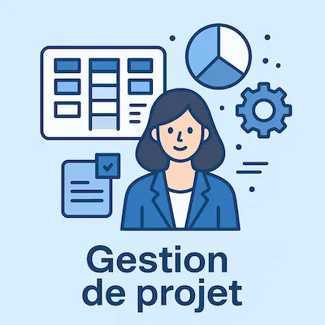

Étude de Cas : Internalisation d'un SIRH Paie
Agilité, Fiabilité et Réduction des Coûts.

← Retour aux études de cas
Le Contexte
La gestion de la paie pour les 5 entités du groupe "A Lundi" était externalisée, ce qui entraînait des coûts élevés, un manque de flexibilité et des difficultés à gérer la complexité des multiples conventions collectives. L'objectif était de rapatrier cette fonction critique en interne.
Mon Rôle
En tant que Gestionnaire de Paie et Chef de Projet Déploiement, j'ai piloté l'intégralité du projet de migration et d'internalisation.
Ma Démarche
- Gestion de Projet de Déploiement : J'ai piloté l'implémentation du logiciel MADPER (Tetra Informatique) pour un périmètre de 250 paies mensuelles.
- Configuration Fonctionnelle Avancée : J'ai réalisé le paramétrage complet de l'outil, incluant les 5 structures, les dossiers entreprises, et surtout les règles de paie complexes (primes, indemnités) et le module spécifique de refacturation des heures.
- Fiabilisation et Lancement : Pour sécuriser la transition, j'ai organisé une phase de paie en doublon pendant plusieurs mois afin de valider à 100% les paramétrages. J'ai ensuite géré la bascule en production et le premier cycle complet en totale autonomie.
Résultats
- Agilité accrue dans la gestion RH (délais de SDC réduits, réactivité sur les variables).
- Processus de refacturation drastiquement simplifié et fiabilisé.
- Réduction significative des coûts de traitement par rapport à l'externalisation.